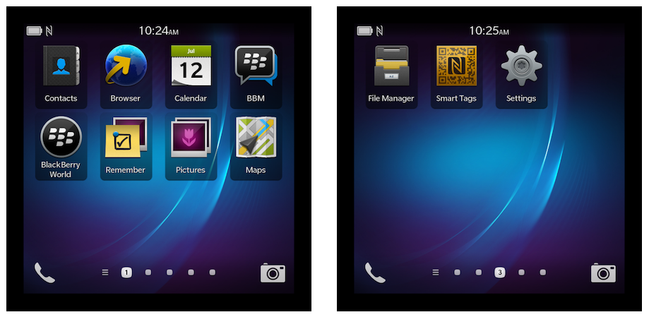
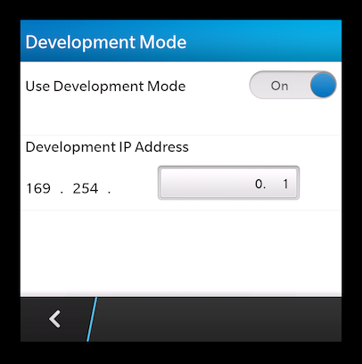
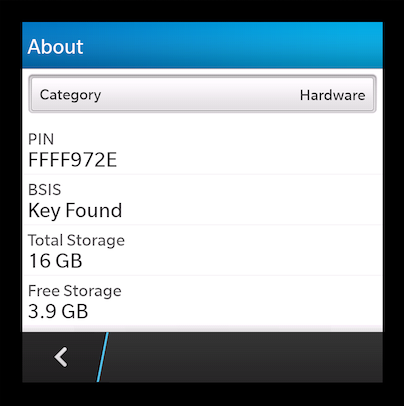

Guide de la plate-forme blackBerry 10
Ce guide montre comment configurer votre environnement SDK pour déployer des applications de Cordova pour BlackBerry 10 appareils. Pour les versions précédentes de BlackBerry, vous devez utiliser un environnement SDK différents et un ensemble d'outils de ligne de commande, décrit dans le Guide de la plate-forme BlackBerry. Pour BlackBerry 10, vous devez installer le SDK indépendamment de si vous souhaitez utiliser la CLI de Cordova de multi-plateforme pour le développement, ou un ensemble plus restreint d'axée sur la plateforme des outils de ligne de commande. Pour une comparaison entre les voies de deux développement, consultez la vue d'ensemble. Pour plus de détails sur chacun, consultez l'Interface de ligne de commande et le BlackBerry 10 Shell Tool Guide.
Exigences
L'environnement de développement est disponible sur Windows, Mac et Linux.
Les développeurs doivent utiliser les cordova utilitaire en conjonction avec le BlackBerry WebWorks SDK ou BlackBerry SDK natif. Voir l'Interface de ligne de commande pour plus d'informations comment faire pour installer cordova , ajouter des projets, puis générer et déployer pour chaque plate-forme.
BlackBerry 10 appareil simulateur :
- Processeur : Intel dual core 2.0 GHz/AMD Athlon 4200 + ou supérieur
- Espace disque : 10 Go
- Mémoire RAM: 4 Go
- Virtualisation : une des valeurs suivantes :
- Technologie de virtualisation Intel (VT, VT-x, vmx) → Intel VT-x pris en charge la liste des processeurs
- AMD Virtualization (AMD-V, SVM) (Depuis mai 2006, tous les processeurs AMD incluent AMD-V sauf Sempron).
Plus d'informations sur la configuration requise : BB10 simulateur requeriments.
Installer le SDK BlackBerry WebWorks
Télécharger et installer le SDK BlackBerry WebWorks par developer.blackberry.com
L'installateur va ajouter des outils de ligne de commande à votre chemin. Selon votre système d'exploitation, vous devrez peut-être ouvrir une nouvelle fenêtre de terminal ou de ré-ouvrir une session.
Installer le SDK natif de BlackBerry
Si vous avez besoin de compiler du code natif, par exemple lors du développement d'un plugin natif, vous aurez besoin d'installer le kit de développement natif de BlackBerry.
Afin d'obtenir le kit de développement natif de BlackBerry, télécharger et installer l'IDE pour BlackBerry disponible de developer.blackberry.com, puis à l'aide de l'IDE, installez le kit de développement natif de BlackBerry. Après installation, vous devez ajouter ses outils de ligne de commande à votre path système.
Sur Windows :
Aller à mon ordinateur → propriétés → avancé → Variables d'environnement.
Ajoute le répertoire d'installation du SDK natif au chemin, par exemple :
;C:\bbndk\host_10_1_0_132\win32\x86\usr\bin\
Sur Mac et Linux :
Modifier la
~/.bash_profilefichier, en ajoutant une ligne semblable à la suivante, selon lequel le kit de développement natif a été installé :$ export PATH=${PATH}:/Applications/bbndk/host_10_1_0_132/darwin/x86/usr/bin/ou pour le kit de développement natif 10.2 :
$ export PATH=${PATH}:/Applications/Momentics.app/host_10_2_0_15/darwin/x86/usr/bin/Exécutez la commande suivante pour appliquer la modification à la présente session :
$ source ~/.bash_profile
Si tu as un problème environnemental, en utilisant le kit de développement natif de la ligne de commande, exécutez le fichier approprié pour votre plate-forme, située dans le chemin d'installation :
Sur Windows → shell MS-DOS :
C:\> \bbndk\bbndk-env_xx_xx_xx_xxxx.batSur Windows → shell bash git :
$ `\bbndk\bbndk-env_xx_xx_xx_xxxx.bat`Sur Linux → installé en tant qu'utilisateur root :
$ `./opt/bbndk/bbndk-env_xx_xx_xx_xxxx.sh`Sur Linux → installé en tant qu'utilisateur non-root :
$ `./home/username/bbndk/bbndk-env_xx_xx_xx_xxxx.sh`Sur Mac :
$ `/Developer/SDKs/bbndk/bbndk-env_xx_xx_xx_xxxx.sh`
Mis en place pour la signature
Si vous souhaitez tester sur un périphérique ou de distribuer des applications via BlackBerry World, votre système doit être configuré pour la signature de code.
Pour obtenir une clé de signature, aller à votre [BlackBerry touches Commande] (https://www.blackberry.com/SignedKeys/codesigning.html).
Cochez la première case: "pour BlackBerry10 apps développées à l'aide de BlackBerry NDK" et puis connectez-vous ou créez un BBID.
Entrez un mot de passe et cliquez sur « Get jeton » pour télécharger bbidtoken.csk. Enregistrez ce fichier dans l'emplacement par défaut pour votre système d'exploitation qui s'affichera sur la page de téléchargement.
La dernière étape consiste à générer un certificat de signature :
$ blackberry-keytool -genkeypair -storepass <password> -author 'Your Name’
Créer un projet
Utilisez l'utilitaire de cordova à mettre en place un nouveau projet, tel que décrit dans l'Interface de ligne de commande. Par exemple, dans un répertoire de code source :
$ cordova create hello com.example.hello
$ cd hello
$ cordova platform add blackberry10
$ cordova build
Déployer sur émulateur
Si vous souhaitez lancer un émulateur de périphérique, téléchargez et installez le simulateur de 10 BlackBerry.
Avant de tester une application sur un émulateur ou un périphérique, vous devez activer le mode de développement.
Lancer l'image de l'émulateur, puis cliquez sur paramètres depuis l'écran d'accueil :

Accédez à la → sécurité et vie privée Mode de développement section et activer l'option :

Un jeu supplémentaire d'utilitaires de ligne de commande sont inclus lorsque vous configurez la plate-forme BlackBerry 10 pour votre projet. La commande suivante, appelée dans ce cas depuis le répertoire racine du projet, associe une cible nommée l'UEM avec l'adresse IP affichée ci-dessus.
Sur Windows :
$ platforms\blackberry10\cordova\target.bat add emu 169.254.0.1 -t simulatorSur Mac/Linux :
$ platforms/blackberry10/cordova/target add emu 169.254.0.1 -t simulator
Ensuite, exécutez le emulate commande pour visualiser l'application :
$ cordova emulate blackberry10
Déployer sur le périphérique
À déployer sur un périphérique, assurez-vous qu'elle est branchée à votre ordinateur. Activer le mode de développement et d'obtenir l'adresse IP comme décrit dans la section émulateur ci-dessus. Vous devrez également obtenir le NIP de la l'application de paramètres sous sur → matériel:

Exécutez l'utilitaire de ligne de commande cible pour associer un nom à une adresse IP, mot de passe de périphérique et un code PIN.
Sur Windows :
$ platforms\blackberry10\cordova\target.bat add mydevice 169.254.0.1 -t device --password 123456 --pin FFFF972ESur Mac/Linux :
$ platforms/blackberry10/cordova/target add mydevice 169.254.0.1 -t device --password 123456 --pin FFFF972E
où :
--passwordveut dire le mot de passe pour déverrouiller l'appareil.--pindésigne le périphérique PIN provenant de l'application de paramètres .
Ensuite, exécutez le run commande pour visualiser l'application :
$ cordova, exécutez blackberry10
Si un jeton de débogage n'est pas encore configuré pour le périphérique, un message d'erreur vous invite à utiliser la plateforme d'exécuter le script avec le mot de passe que vous avez fourni lors de l'inscription pour les clés de signature.
Sur Windows :
$ platforms\blackberry10\cordova\run.bat --device --keystorepass mysecretSur Mac/Linux :
$ platforms/blackberry10/cordova/run --device --keystorepass mysecret
Débogage avec WebInspector
Lorsque vous déboguez sur l'appareil ou un émulateur, vous pouvez exécuter WebInspector à distance pour afficher état interne de l'application. Une invite de commandes affiche l'URL qui vous permet de vous connecter à l'application avec un navigateur web standard. Pour plus d'informations, consultez débogage à l'aide de WebInspector.
Générer une Version finale
Par défaut, exécutez la cordova build commande crée un fichier de package non signé .bar appropriée aux essais sur un appareil ou un simulateur.
Utiliser --release pour créer une version adaptée à la distribution par l'intermédiaire de BlackBerry World.
$ cordova build --release --keystorepass <signing password>
Le --keystorepass option spécifie le mot de passe vous avez défini lors de la configuration de votre ordinateur pour signer les applications.
Déployer dans d'autres endroits
Les instructions ci-dessus supposent un appareil est branché via USB ou d'un simulateur est en cours d'exécution sur l'ordinateur local. Il est également possible de déployer dans d'autres endroits.
Un jeu supplémentaire d'utilitaires de ligne de commande sont inclus lorsque vous configurez la plate-forme BlackBerry 10 pour votre projet. La commande suivante, appelée dans ce cas depuis le répertoire racine du projet, associe une cible nommée l'UEM avec une adresse IP.
Sur Windows :
$ platforms\blackberry10\cordova\build.bat --release --keystorepass mysecretSur Mac/Linux :
$ platforms/blackberry10/cordova/build --release --keystorepass mysecret
Une fois que la cible est définie, vous pouvez le fournir à la commande d'exécution à l'aide --target :
$ cordova run blackberry10 --target=emu